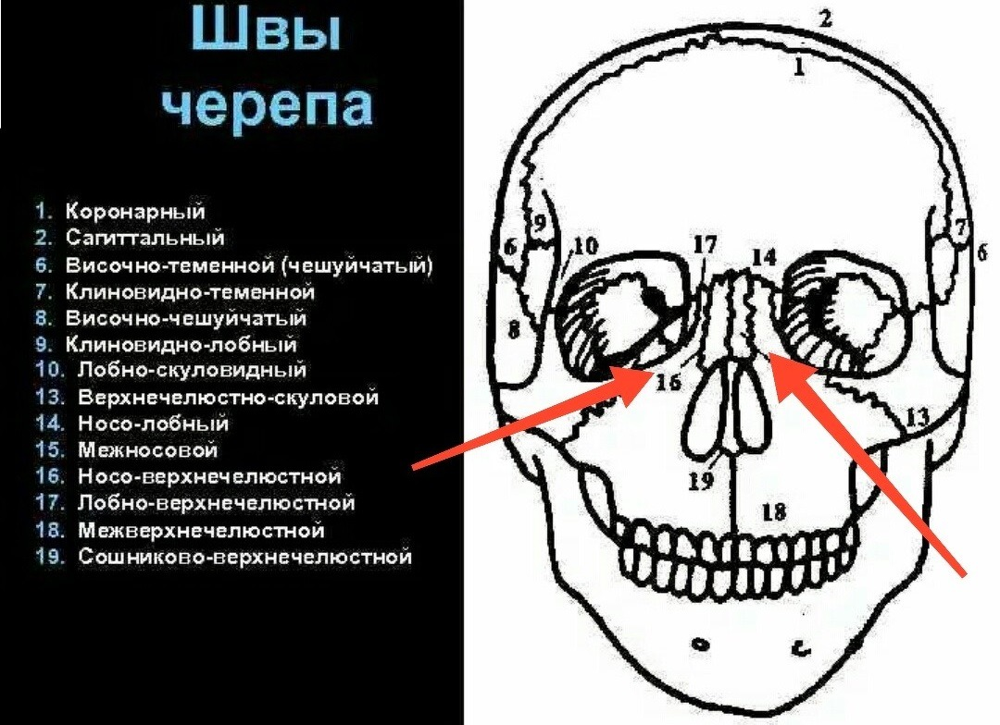

Сегодня поборемся со всеми нелюбимыми носогубками на костном уровне). И еще эти приемы поднимают нос!
Как известно, центр нашего лица с возрастом стягивается вниз и в центр, этот процесс сопровождается костным и мышечным напряжением. И если с мышцами многие давно умеют успешно работать, то упражнения на расслабление швов и костей далеко не так известны и популярны. А между тем именно здесь может быть главная причина имеющихся проблем.
Наш нос - как центр лица - накапливает это напряжение, твердеет с возрастом и опускается кончиком вниз вслед за просевшей вглубь черепа максиллой, поэтому с носом и зоной вокруг него обязательно надо работать.
1. Большой палец одной руки, как и в предыдущих приемах, ставим на свод неба, указательный палец второй руки устанавливаем крючком на носо - верхнечелюстной шов. На вдохе подталкиваем изнутри небо вверх, а внешней рукой двигаем кость вбок от носа. На выдохе удерживаем это растяжение. Так 3 - 5 раз. Меняем сторону.
2. Теперь большой палец одной руки ставим на небо сбоку - под скулой, вторая рука придерживает нос. На вдохе аналогично разводим кости от шва (флексия), на выдохе удерживаем растянутое положение. То есть, например, правая рука во рту двигает правую скулу вправо, а левая чуть смещает нос влево, и наоборот. Повторить 3 - 5 раз и сменить сторону. Я показываю довольно быстро, но вы делайте помедленнее и вдумчиво, подключайте визуализацию и старайтесь ощутить, как расширяются скулы, поднимается носик и разглаживается лицо, это действительно